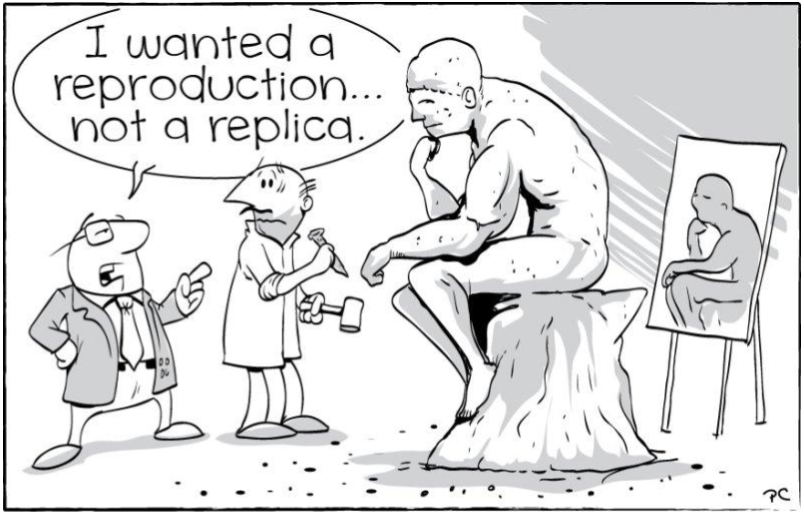
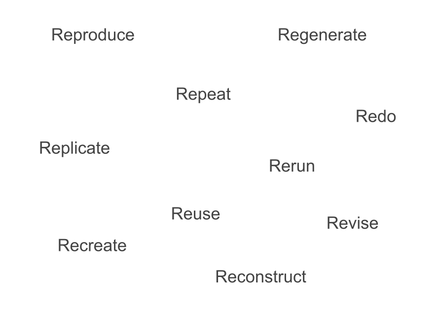

02:00
Guide for Reproducible Research
What do we mean by reproducible?
Guide for Reproducible Research
Reading
- Chapter: Guide for Reproducible Research
- Book: The Turing Way
- Year: 2024
- https://book.the-turing-way.org/reproducible-research
Reproducibility

What is the right verb?

Victoria Stodden’s definitions
Computational Reproducibility: Sharing exact code, software environments, and data to replicate the exact digital output.
Empirical Reproducibility: Providing detailed logs of physical data collection, tools, settings, and methodology.
Statistical Reproducibility: Accurately reporting all parameters, multi-test variations, and filter selections to prevent false-positive biases.
Activity
Tip
Before showing any definitions, project the words Reproducible, Replicable, Robust, and Generalisable on the screen. Have students type a one-word synonym for each in a live word cloud tool (like Mentimeter).
2x2 Matrix
Tip
Task: Project a blank 2x2 grid on the board. The X-axis is labeled “Data” (Same / Different) and the Y-axis is labeled “Analysis” (Same / Different).
Have student pairs place the 4 core concepts in their correct boxes based on the text.
Same Data + Same Analysis = ?
Different Data + Same Analysis = ?
Same Data + Different Analysis = ?
Different Data + Different Analysis = ?
2x2 Matrix
Same Data + Same Analysis = Reproducible.
Different Data + Same Analysis = Replicable.
Same Data + Different Analysis = Robust.
Different Data + Different Analysis = Generalisable.
2x2 Matrix
[ SAME DATA ] [ DIFFERENT DATA ]
┌───────────────────────┬───────────────────────┐
[ SAME │ REPRODUCIBLE │ REPLICABLE │
ANALYSIS]│ (Same steps & data) │ (Qualitately similar) │
├───────────────────────┼───────────────────────┤
[ DIFF. │ ROBUST │ GENERALISABLE │
ANALYSIS]│ (Language agnostic) │ (The Holy Grail) │
└───────────────────────┴───────────────────────┘Question
If you run a dataset through an R package and get an answer, then run the exact same data through a Python script and get a different answer, what did you just prove about the research?
Stodden’s definitions
Victoria Stodden argues that treating “reproducibility” as a single broad concept hides the distinct failure points of a project. To solve this, she isolates three distinct layers of scientific integrity:
Computational Reproducibility: Sharing the precise code, software versions, hardware specs, and execution scripts.
Empirical Reproducibility: Providing the raw physical observations and a detailed ledger of the exact collection methodology.
Statistical Reproducibility: Documenting the deliberate choice of statistical tests, threshold filters (p-values), and model parameters to prevent data-dredging.
Scenario 1
A student group writes a flawless Python script.
They run a dataset through 50 different machine learning models with slightly tweaked thresholds.
Model #47 yields a statistically significant, brilliant correlation (p < 0.01).
They publish Model #47 along with their exact script, claiming an absolute breakthrough.
They never mention models 1 through 46.
Since they provided the exact code and data to reproduce Model #47 perfectly, is this computationally reproducible?
Scenario 2
A research team writes a beautiful script to analyze air quality fluctuations across a city.
The code runs without error and perfectly generates a set of maps.
However, when a peer tries to collect their own air data using identical scripts in a neighboring town, the code crashes because the original team forgot to mention that their physical air sensors require a highly specific temperature calibration step before recording numbers.
Since they provided the exact code and data to reproduce their maps, is this computationally reproducible?
Scenario 3
A paper published in 2021 includes a download link to an R script and a clean CSV data table.
When a student tries to run the script today, it immediately aborts with 12 syntax errors because the modern R libraries installed on their laptop no longer support the deprecated commands used five years ago.
The data is there, and the code text is unchanged. Why is this project currently dead?
Advantages of Working Reproducibly
Added Advantages
- Provenance
- Collaboration
- Misinformation Avoidance
- Efficient Writing
- Fair Credit
- Continuity
Which of these six benefits would save you the most physical stress the night before a final project deadline?
The Selfish Scientist Paradigm
Florian Markowetz famously wrote an article titled “Five Selfish Reasons to Work Reproducibly”1
Based on the text, why is framing reproducibility as a “selfish benefit” actually more effective at changing scientist behaviors than framing it as a community benefit?
02:00
Retraction Scenario
You publish a paper using a manual Excel data-cleaning process.
A year later, a peer points out an anomaly in your chart.
Because you didn’t save the automated tracking provenance, you can’t prove it was an accidental typo rather than deliberate fraud.
Your paper is retracted.
Retraction Scenario (cont’d)
How do you prove an innocent mistake when there is no paper trail?
What are some of the costs of a retraction on a researcher’s career?
If you had an automated pipeline, how would this nightmare scenario end differently?
Is an unrecorded Excel click actually “science”?
Take Aways
“A study can be reproducible and still be wrong.”
Roger Peng, 2014
“Just because a result is reproducible does not make it right, and just because it is not reproducible does not make it wrong.”
Nature